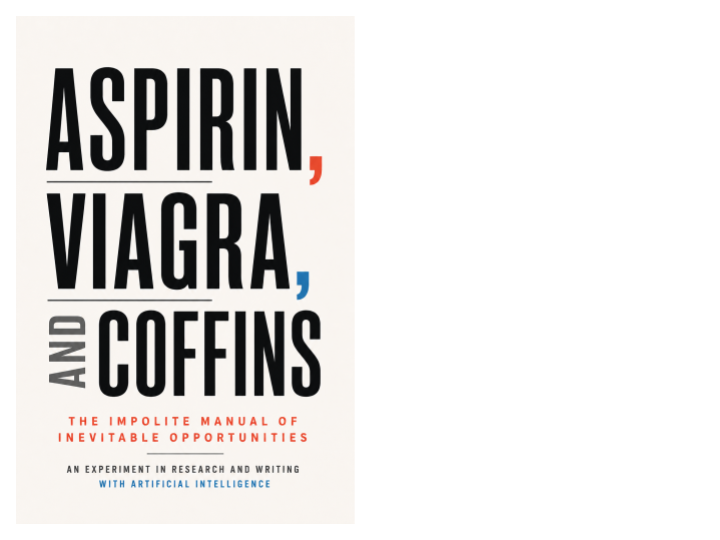

Essay · Axiologic Research Editions
Aspirin, Viagra, and Coffins
The Impolite Manual of Inevitable Opportunities
Every market hears a signal. Some signals are the sound of a wound.
Three signals from a world that hurts
The title is deliberately rude, but the book is not a celebration of cynicism. Aspirin names a pain so widespread it carries its own product demonstration. Viagra names the immediate, discreet and shame-shaped demand that conventional respectability misses. Coffins name the certainty of mortality, the market no customer leaves. Together they become a satirical lens on how modern economies notice suffering, and how quickly noticing can become extraction.
The author calls this an explicit AI writing experiment. The requested sardonic tone repeatedly slips into a more polite book, and that failure is discussed rather than concealed. The result is less a startup manual than a test of whether language models can hold an ethical distinction: pain can be tragedy, research object and opportunity at once, but opportunity is not permission.
Where the joke stops working
What makes an “inevitable opportunity” different from exploitation? The book’s answer is an ethics of whether a business reduces the dependency it profits from, exposes trade-offs and leaves people more capable rather than more trapped.
Why connect social media and AI to this question? Phones can turn comparison into a microdose pharmacy; an AI listener can become therapist, companion, secretary or “cognitive pimp.” Each role needs boundaries and accountability.
Can modernity be escaped without romanticising deprivation? The final chapters seek lives, organisations and markets that do not demand total nervous sacrifice while keeping the dentist, medicine and genuine cooperation.
A demand curve is not a moral map.
The bill beneath the punchline
Read this if you invest, build products, study the attention economy or feel wary of wellness language that turns distress into a funnel. Its caricatural titles make an uncomfortable point memorable, while the later chapters ask for a design ethic: sell the antidote without becoming the poison. It is a lively entry in the collection’s broader inquiry into how technology can make hidden harms visible, or make them scalable.